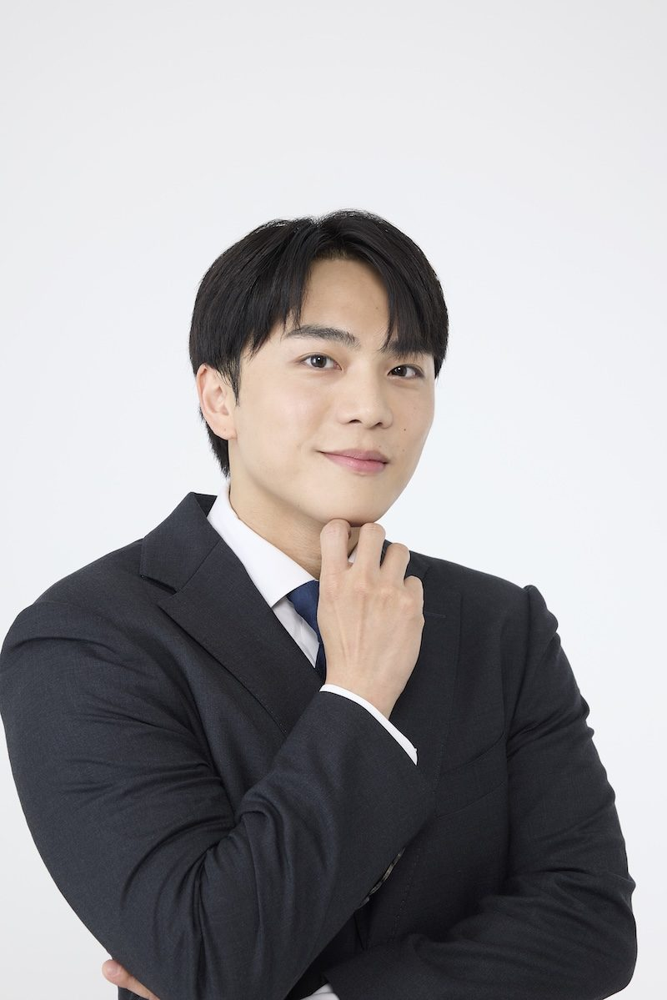

About Us
会社概要
VISION
発音から国境をなくし、
日本と韓国が"自然に通じ合う"未来をつくる。
MISSION
韓国語は「発音」が9割を軸に、最短で"通じる韓国語"を実装できる学習体験を提供し、日韓の相互理解と挑戦を増やす。
Value私たちが大切にする9つの価値
発音ファースト
- まず音。単語・文法は「通じる音」の上に積む
- 伝わらない表現を放置しない
再現性誰でもできる
- 天才前提の教え方をしない
- 手順・チェックポイント・練習設計を明確にする
実戦主義通じたかが正義
- テストは点数ではなく「会話で通じる」を基準にする
- 現場で使える頻出フレーズと運用力を優先する
UX設計迷わせない
- 次に何をやれば良いかが一目でわかる導線
- 学習の挫折ポイントを先回りして潰す
プロ品質通訳基準
- 曖昧に教えない／誤解を生む言い回しを避ける
- 期待値を超える準備と責任で信頼を積む
架け橋としての品格
- 文化への敬意、相互理解、フェアな視点を貫く
- 対立を煽らず、関係が前進する言葉を選ぶ
伴走と自立
- 依存ではなく「自走できる」状態をゴールにする
- 学習者の自己効力感を育てるフィードバックをする
成果へのコミット結果まで責任を持つ
- 発音・会話の上達に直結するカリキュラムを設計する
- 「通じた」という結果が出るまで、やり方を変え続ける
スピードと改善小さく試して速く直す
- 良い企画はすぐ形にし、受講生の反応から改善を回す
- 完璧を待たず、学びの質を毎週アップデートする
Greeting代表挨拶

日韓の架け橋として、
"通じ合う"未来をつくる
韓国で生まれ、大学から日本に来て暮らす中で、言葉が「通じる」ことの力を身をもって体験してきました。会話を通じて心が開き、綺麗な発音をもとにした自然なやりとりから信頼が生まれ、国境を越えた関係が前に進む——その瞬間を何度も目の当たりにしてきたからこそ、「発音」を起点とした韓国語教育に人生を懸ける決意をしました。
アクセントエースは、「韓国語は発音が9割」という信念のもと、最短で"通じる韓国語"を身につけられる学習体験を提供しています。京都大学で学んだ言語学・脳科学の知見と、多くの学習者への指導や教育機関での講義を通じて積み重ねてきた実践経験を融合し、「勉強したのに話せない」という壁を取り除くことが、私たちの使命です。
そして今、私が最も力を注ぎたいのは、これからの日韓関係を担う子どもたちへの支援です。幼い頃から「通じ合う」体験を持った子どもたちは、異なる文化を恐れず、相手を理解しようとする心を自然に育みます。言葉が通じることは、単なるスキルではなく、人生の選択肢を広げ、相互理解を生む"インフラ"です。未来の架け橋となる子どもたちが、発音への自信とともに一歩を踏み出せるよう、私たちは全力で伴走してまいります。
日本と韓国が、誤解なく、気持ちよくつながる社会へ。その実現のために、私たちは発音ファーストの教育を通じて、一人でも多くの「架け橋」を育てていきます。
代表取締役 ユン・スンジュン株式会社アクセントエース
Company会社情報
| 会社名 | 株式会社アクセントエース（ACCENT ACE Inc.） |
|---|---|
| 本社所在地 | 〒104-0061 東京都中央区銀座7丁目13番20号 銀座THビル9階 |
| 代表取締役 | ユン・スンジュン |
| 設立 | 2024年7月17日 |
| 事業内容 | 発音特化型・韓国語オンラインスクール「K-PRO」の運営／韓国語の無料ライブ講座・YouTube・公式LINEによる学習コンテンツの提供／教育機関向け講演・特別授業／テレビ番組出演・メディア寄稿 |
| お問い合わせ | 公式LINE よりご連絡ください |